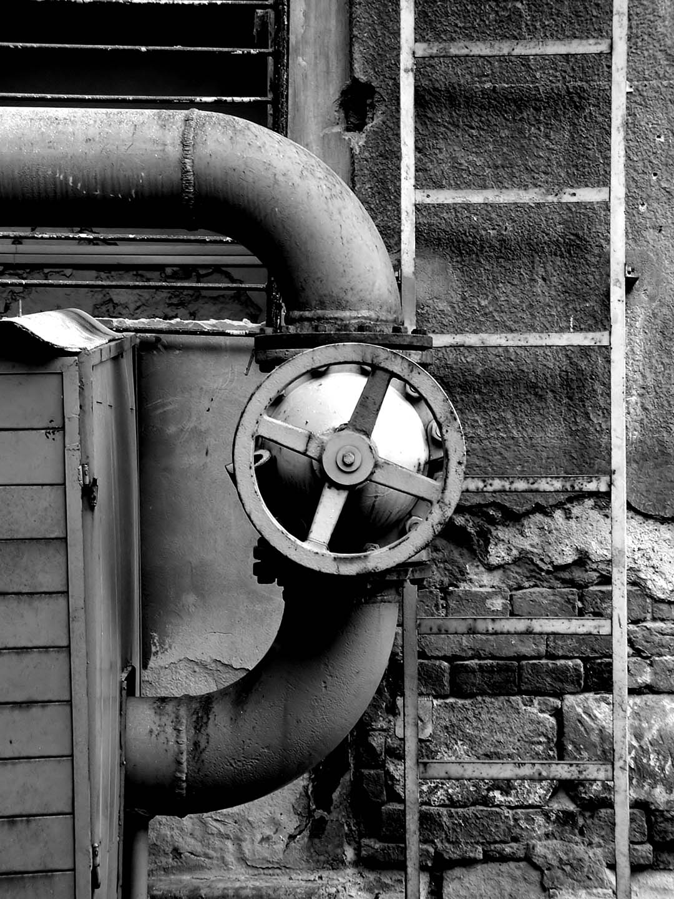

Ready to Go — Budapest, Hungary, 2003
The Castle #1 — Budapest, Hungary, 2003
Chainbridge — Budapest, Hungary, 2003
The Parliament — Budapest, Hungary, 2003

Guardian — Budapest, Hungary, 2003
Angel — Budapest, Hungary, 2003
Fisherman's Bastion — Budapest, Hungary, 2003
Burn — Budapest, Hungary, 2003
Abandoned Textile Factory — Budapest, Hungary, 2003
Old Factory Yard — Budapest, Hungary, 2003

Apparatus — Budapest, Hungary, 2003
Crossing Point — Budapest, Hungary, 2003
Junction — Budapest, Hungary, 2003
Alice — Budapest, Hungary, 2003
Diane — Budapest, Hungary, 2003
Calm — Budapest, Hungary, 2003
Japanese Gardens — Budapest, Hungary, 2003

Veins — Budapest, Hungary, 2003
Contemplation — Budapest, Hungary, 2003
Industrial Sunset — Budapest, Hungary, 2003
Gone Fishing — Budapest, Hungary, 2003
Our Heroes — Budapest, Hungary, 2003
Liberty — Budapest, Hungary, 2003
Nightscape — Budapest, Hungary, 2003
Out of Order — Budapest, Hungary, 2003
Nobody's Home — Budapest, Hungary, 2003
Ruins — Budapest, Hungary, 2003
Nonconformity — Budapest, Hungary, 2003
Ruins of a Turkish Bath — Budapest, Hungary, 2003
The Wall — Budapest, Hungary, 2003
The Castle #2 — Budapest, Hungary, 2003